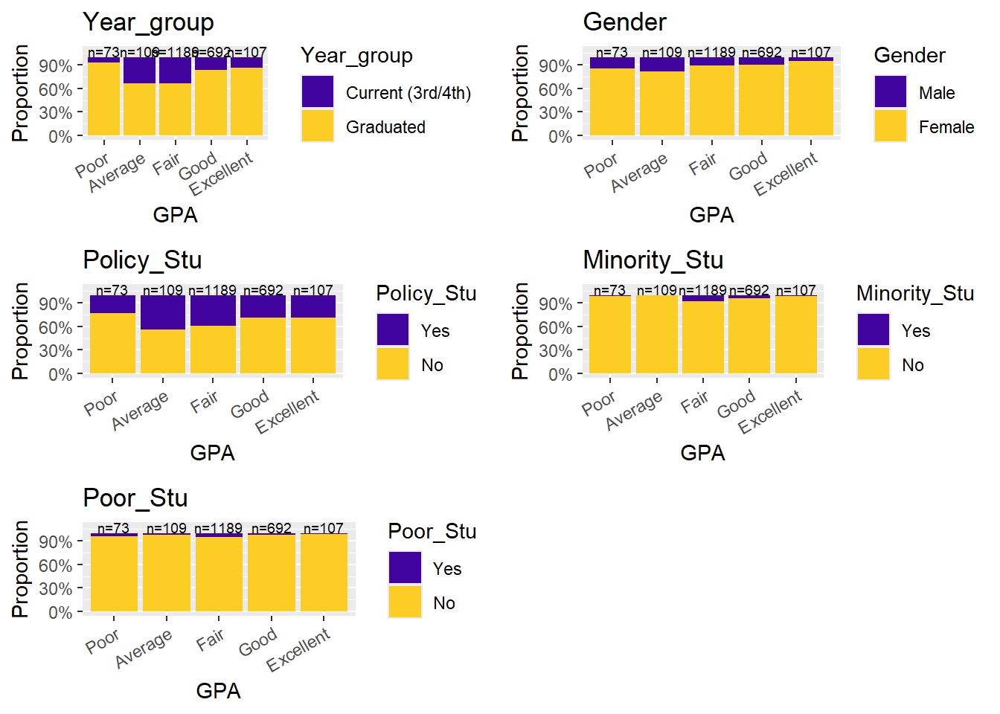
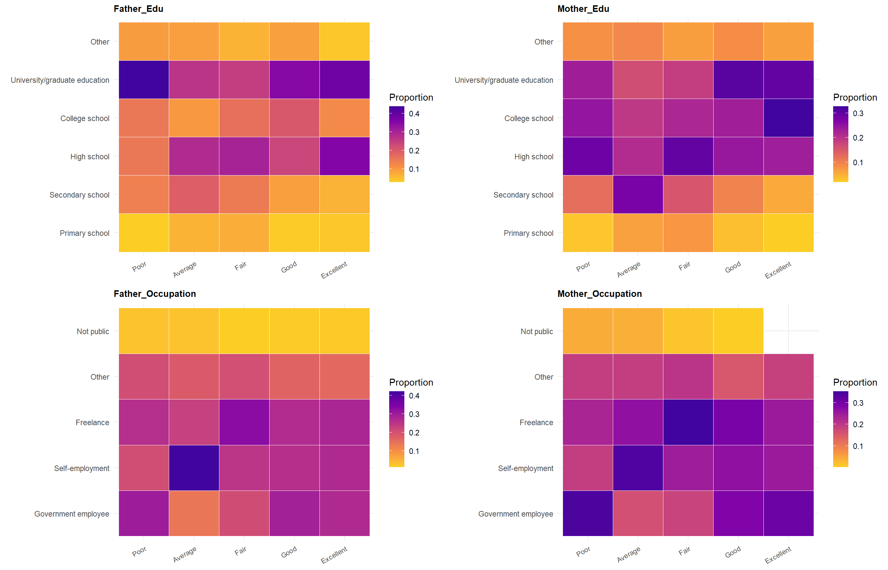
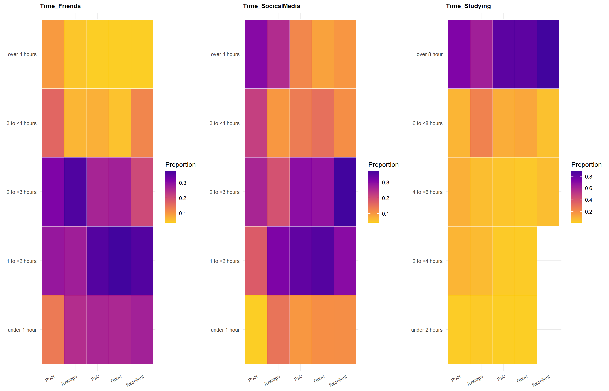
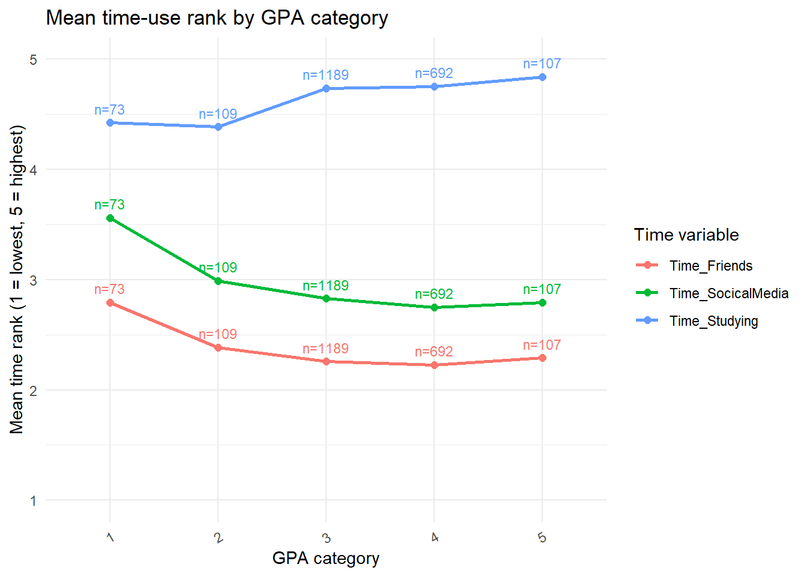
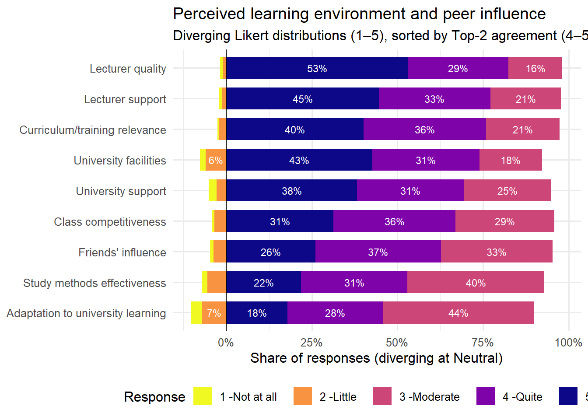

pacman::p_load(
gt, tidyverse, readxl, skimr,
ggdist, ggridges, ggthemes, colorspace,
scales, cowplot,
seriation, dendextend, heatmaply,
viridis)Take-home Exercise 1
Overview
A survey aimed to manage students and factors affecting their learning outcomes was conducted in Vietnam National University (VNU). The survey is faced to both current student and alumni in VNU from March to June 2023, and there were 2170 valid feedback.
This visual analysis will transform the survey data into student learning outcome insights by identifying patterns, trends, and relationships within responses.
Loading Package
The following R packages are loaded using pacman::p_load() function.
| Software and R packages used in this analysis | |
| Package | Purpose in workflow |
|---|---|
| R packages used | |
| tidyverse | Core tools for data wrangling, reshaping, and visualisation. |
| readxl | Reads Excel files (.xls/.xlsx) into R. |
| skimr | Compact data summaries (missingness, distributions, descriptive stats). |
| pacman | Loads/installs packages via p_load() for reproducibility. |
| Data visualization (ggplot extensions) | |
| ggplot2 (via tidyverse) | Primary plotting system used to build all figures. |
| ggdist | Distribution/interval geoms for uncertainty and comparisons. |
| ggridges | Ridge plots for comparing distributions across groups. |
| ggthemes | Predefined themes for consistent plot styling. |
| colorspace | Colour tools for palette control and consistent visual design. |
| cowplot | Combine, align, and annotate multiple ggplots in one figure. |
| Association and clustering / heatmap utilities | |
| seriation | Reorders rows/columns to reveal structure in matrices (useful for heatmaps). |
| dendextend | Manipulates and customises dendrograms (reorder, cut, style). |
| heatmaply | Creates interactive heatmaps (plotly-based). |
| viridis | Perceptually uniform, colourblind-friendly palettes. |
The Data
The survey data is the “Database paper” file in excel format and related “CODEBOOK” file in word format, retrieved from Mendelay Data.
Importing Data
raw <- read_excel("C:/Users/jiayi/Documents/SMU/26 Jan Term/ISSS608_Visual_Analytics_and_Applications/ISSS608_Lwn0170/data/TE01_data.xlsx", sheet = 1)Data pre-processing
Before using survey data, we first take a look and have a further study of the dataset.
The dataset consists of 2,170 rows and 22 columns.
Transformation
The survey data were initially encoded numerically,where discrete integers represent categorical responses (e.g., 1 = “Male”, 2 = “Female”). Based on the CODEBOOK, these variables were transformed into factors for nominal categories and ordered factors for ordinal scales.
In this case, the dataset preserves the measurement level of each variable, enforces a meaningful ordering for ordinal responses, and also generates correctly ordered axes with interpretable labels in visual analysis later.
survey <- raw %>%
mutate(
Year = factor(
Year, levels = 1:5,
labels = c("First-year", "Second-year", "Third-year", "Fourth-year", "Graduated"),
ordered = TRUE
),
Gender = factor(Gender, levels = c(1,2), labels = c("Male", "Female")),
Policy_Stu = factor(Policy_Stu, levels = c(1,2), labels = c("Yes","No")),
Minority_Stu = factor(Minority_Stu, levels = c(1,2), labels = c("Yes","No")),
Poor_Stu = factor(Poor_Stu, levels = c(1,2), labels = c("Yes","No")),
Father_Edu = factor(
Father_Edu, levels = 1:6,
labels = c("Primary school", "Secondary school", "High school", "College school", "University/graduate education", "Other"),
ordered = TRUE
),
Mother_Edu = factor(
Mother_Edu, levels = 1:6,
labels = c("Primary school", "Secondary school", "High school", "College school", "University/graduate education", "Other"),
ordered = TRUE
),
Father_Occupation = factor(
Father_Occupation, levels = 1:5,
labels = c("Government employee", "Self-employment", "Freelance", "Other", "Not public")
),
Mother_Occupation = factor(
Mother_Occupation, levels = 1:5,
labels = c("Government employee", "Self-employment", "Freelance", "Other", "Not public")
),
Time_Friends = factor(
Time_Friends, levels = 1:5,
labels = c("under 1 hour", "1 to <2 hours", "2 to <3 hours", "3 to <4 hours", "over 4 hours"),
ordered = TRUE
),
Time_SocicalMedia = factor(
Time_SocicalMedia, levels = 1:5,
labels = c("under 1 hour", "1 to <2 hours", "2 to <3 hours", "3 to <4 hours", "over 4 hours"),
ordered = TRUE
),
Time_Studying = factor(
Time_Studying, levels = 1:5,
labels = c("under 2 hours", "2 to <4 hours", "4 to <6 hours", "6 to <8 hours", "over 8 hour"),
ordered = TRUE
),
GPA = factor(
GPA, levels = 1:5,
labels = c("Poor", "Average", "Fair", "Good", "Excellent"),
ordered = TRUE
),
Adapt_Learning_Uni = factor(
Adapt_Learning_Uni, levels = 1:5,
labels = c("Not at all", "Little", "Moderate", "Quite", "Very"),
ordered = TRUE
),
Study_Methods = factor(
Study_Methods, levels = 1:5,
labels = c("Not at all", "Little", "Moderate", "Quite", "Very"),
ordered = TRUE
),
SupportOf_Uni = factor(
SupportOf_Uni, levels = 1:5,
labels = c("Not at all", "Little", "Moderate", "Quite", "Very"),
ordered = TRUE
),
SupportOf_Lec = factor(
SupportOf_Lec, levels = 1:5,
labels = c("Not at all", "Little", "Moderate", "Quite", "Very"),
ordered = TRUE
),
Facilitie_Uni = factor(
Facilitie_Uni, levels = 1:5,
labels = c("Not at all", "Little", "Moderate", "Quite", "Very"),
ordered = TRUE
),
Quality_Lecturer = factor(
Quality_Lecturer, levels = 1:5,
labels = c("Not at all", "Little", "Moderate", "Quite", "Very"),
ordered = TRUE
),
TrainingCurriculum = factor(
TrainingCurriculum, levels = 1:5,
labels = c("Not at all", "Little", "Moderate", "Quite", "Very"),
ordered = TRUE
),
Competitive_Class = factor(
Competitive_Class, levels = 1:5,
labels = c("Not at all", "Little", "Moderate", "Quite", "Very"),
ordered = TRUE
),
InfuenceF_Friends = factor(
InfuenceF_Friends, levels = 1:5,
labels = c("Not at all", "Little", "Moderate", "Quite", "Very"),
ordered = TRUE)
)Data Screening
Following the conceptual framework of the original survey study, all explanatory variables were grouped into two categories: (A) demographic factors, and (B) motivation and external learning factors. GPA is treated separately as the outcome variable, representing student learning performance.
Before visualising the survey results, table() was used to inspect the frequency distribution of each categorical variable (including missing values).
This quick check confirms whether coded responses follow the CODEBOOK, reveals empty categories or imbalanced groups, and helps identify potential data issues (e.g., unexpected codes) that could affect interpretation.
#Demographic Factors#
A_vars <- c(
"Year", "Gender", "Policy_Stu", "Minority_Stu", "Poor_Stu", "Father_Edu", "Mother_Edu", "Father_Occupation", "Mother_Occupation", "Time_Friends", "Time_SocicalMedia", "Time_Studying"
)
#Motivation/External Factors#
B_vars <- c(
"Adapt_Learning_Uni", "Study_Methods", "SupportOf_Uni", "SupportOf_Lec", "Facilitie_Uni", "Quality_Lecturer", "TrainingCurriculum", "Competitive_Class", "InfuenceF_Friends"
)
#Outcome
outcome_var <- "GPA"
============================
Variable: Year
============================
First-year Second-year Third-year Fourth-year Graduated
0 0 135 441 1594
============================
Variable: Gender
============================
Male Female
240 1930
============================
Variable: Policy_Stu
============================
Yes No
766 1404
============================
Variable: Minority_Stu
============================
Yes No
129 2041
============================
Variable: Poor_Stu
============================
Yes No
86 2084
============================
Variable: Father_Edu
============================
Primary school Secondary school
120 274
High school College school
603 370
University/graduate education Other
643 160
============================
Variable: Mother_Edu
============================
Primary school Secondary school
125 294
High school College school
592 495
University/graduate education Other
502 162
============================
Variable: Father_Occupation
============================
Government employee Self-employment Freelance Other
514 565 650 409
Not public
32
============================
Variable: Mother_Occupation
============================
Government employee Self-employment Freelance Other
491 557 695 405
Not public
22
============================
Variable: Time_Friends
============================
under 1 hour 1 to <2 hours 2 to <3 hours 3 to <4 hours over 4 hours
557 785 590 152 86
============================
Variable: Time_SocicalMedia
============================
under 1 hour 1 to <2 hours 2 to <3 hours 3 to <4 hours over 4 hours
229 735 634 306 266
============================
Variable: Time_Studying
============================
under 2 hours 2 to <4 hours 4 to <6 hours 6 to <8 hours over 8 hour
17 47 78 245 1783
============================
Variable: Adapt_Learning_Uni
============================
Not at all Little Moderate Quite Very
70 152 954 606 388
============================
Variable: Study_Methods
============================
Not at all Little Moderate Quite Very
33 120 869 674 474
============================
Variable: SupportOf_Uni
============================
Not at all Little Moderate Quite Very
51 61 553 675 830
============================
Variable: SupportOf_Lec
============================
Not at all Little Moderate Quite Very
20 28 448 706 968
============================
Variable: Facilitie_Uni
============================
Not at all Little Moderate Quite Very
36 131 399 677 927
============================
Variable: Quality_Lecturer
============================
Not at all Little Moderate Quite Very
16 24 342 636 1152
============================
Variable: TrainingCurriculum
============================
Not at all Little Moderate Quite Very
12 45 465 779 869
============================
Variable: Competitive_Class
============================
Not at all Little Moderate Quite Very
13 76 629 772 680
============================
Variable: InfuenceF_Friends
============================
Not at all Little Moderate Quite Very
20 82 707 797 564
============================
Variable: GPA
============================
Poor Average Fair Good Excellent
73 109 1189 692 107 The result shows an imbalanced distribution in study year and gender. There were no first- or second-year respondents in the survey responses, and female students substantially outnumbered male students.
To improve interpretability and avoid misleading comparisons driven by sparse categories, the study-year variable was recoded into two groups: “current students (3rd/4th year)” and “graduated.” Gender was retained but interpreted with caution due to the uneven group sizes.
survey_final <- survey %>%
mutate(
Year_group = case_when(
Year %in% c("Third-year", "Fourth-year") ~ "Current (3rd/4th)",
Year == "Graduated" ~ "Graduated",
TRUE ~ NA_character_
) %>%
factor(levels = c("Current (3rd/4th)", "Graduated"))
)
table(survey_final$Year_group, useNA = "ifany")
Current (3rd/4th) Graduated
576 1594 Exploratory Data Analysis -
Distribution of Students’ Learning Performance (GPA)
GPA is measured as an ordered categorical variable rather than a continuous numeric measure, a bar chart is more appropriate for visualizing its frequency distributions and allows clearer comparison across GPA groups.
gpa_dist <- count(survey_final, GPA)
ggplot(gpa_dist, aes(x = GPA, y = n)) +
geom_col() +
geom_text(aes(label = n), hjust = -0.1) +
coord_flip() +
labs(
title = "Distribution of GPA",
x = "GPA category",
y = "Number of students"
) +
theme_minimal()
The distribution of GPA shows a clear concentration in the middle categories. The majority of respondents fall into the “Fair” (n = 1189) and “Good” (n = 692) categories, while relatively few students are located at the extremes.
This indicates that learning performance in the survey is clustered around moderate achievement levels rather than polarized at either the high or low end.
This pattern suggests that explanatory factors are more likely to manifest as subtle distributional shifts rather than dramatic polarization effects. Thus, for subsequent analyses, we will focus on examining proportional differences across GPA levels rather than assuming large structural divides.
Relationship between Learning Outcome and Group A: Demographic Factors
To improve interpretability, Group A variables are separated into two sets based on their measurement structure.
The first set contains binary variables only, which are well-suited for 100% stacked bar charts because the proportional composition remains easy to compare across GPA categories.
The second set contains multi-level ordinal or categorical variables. For these variables, stacked bars become visually cluttered due to many categories and colors. Therefore, heatmap is used to highlight distributional shifts across GPA levels more clearly while reducing unnecessary visual noise.
Last but not least, percentages rather than count nnumber will be used due to the data sizes differ between groups and GPA levels.
Proportional Composition of Binary Group A Variables by GPA
Binary Group A variables (2 levels):
- Year_group
- Gender
- Policy_Stu
- Minority_Stu
- Poor_Stu
n_by_gpa <- dplyr::count(survey_final, GPA, name = "n")
p_year <- ggplot(survey_final, aes(x = GPA, fill = Year_group)) +
geom_bar(position = "fill") +
geom_text(data = n_by_gpa,
aes(x = GPA, y = 1.08, label = paste0("n=", n)),
inherit.aes = FALSE, size = 2.5) +
scale_y_continuous(labels = percent) +
scale_x_discrete(labels = function(x) stringr::str_wrap(x, width = 12)) +
scale_fill_viridis_d(option = "C", begin = 0.1, end = 0.9, name = "Year_group") +
theme(axis.text.x = element_text(angle = 30, hjust = 1)) +
labs(y = "Proportion", title = "Year_group")
p_gender <- ggplot(survey_final, aes(x = GPA, fill = Gender)) +
geom_bar(position = "fill") +
geom_text(data = n_by_gpa,
aes(x = GPA, y = 1.08, label = paste0("n=", n)),
inherit.aes = FALSE, size = 2.5) +
scale_y_continuous(labels = percent) +
scale_x_discrete(labels = function(x) stringr::str_wrap(x, width = 12)) +
scale_fill_viridis_d(option = "C", begin = 0.1, end = 0.9, name = "Gender") +
theme(axis.text.x = element_text(angle = 30, hjust = 1)) +
labs(y = "Proportion", title = "Gender")
p_policy <- ggplot(survey_final, aes(x = GPA, fill = Policy_Stu)) +
geom_bar(position = "fill") +
geom_text(data = n_by_gpa,
aes(x = GPA, y = 1.08, label = paste0("n=", n)),
inherit.aes = FALSE, size = 2.5) +
scale_y_continuous(labels = percent) +
scale_x_discrete(labels = function(x) stringr::str_wrap(x, width = 12)) +
scale_fill_viridis_d(option = "C", begin = 0.1, end = 0.9, name = "Policy_Stu") +
theme(axis.text.x = element_text(angle = 30, hjust = 1)) +
labs(y = "Proportion", title = "Policy_Stu")
p_minority <- ggplot(survey_final, aes(x = GPA, fill = Minority_Stu)) +
geom_bar(position = "fill") +
geom_text(data = n_by_gpa,
aes(x = GPA, y = 1.08, label = paste0("n=", n)),
inherit.aes = FALSE, size = 2.5) +
scale_y_continuous(labels = percent) +
scale_x_discrete(labels = function(x) stringr::str_wrap(x, width = 12)) +
scale_fill_viridis_d(option = "C", begin = 0.1, end = 0.9, name = "Minority_Stu") +
theme(axis.text.x = element_text(angle = 30, hjust = 1)) +
labs(y = "Proportion", title = "Minority_Stu")
p_poor <- ggplot(survey_final, aes(x = GPA, fill = Poor_Stu)) +
geom_bar(position = "fill") +
geom_text(data = n_by_gpa,
aes(x = GPA, y = 1.08, label = paste0("n=", n)),
inherit.aes = FALSE, size = 2.5) +
scale_y_continuous(labels = percent) +
scale_x_discrete(labels = function(x) stringr::str_wrap(x, width = 12)) +
scale_fill_viridis_d(option = "C", begin = 0.1, end = 0.9, name = "Poor_Stu") +
theme(axis.text.x = element_text(angle = 30, hjust = 1)) +
labs(y = "Proportion", title = "Poor_Stu")
plot_grid(p_year, p_gender, p_policy, p_minority, p_poor, ncol = 2)
As shown in the figure, the binary background indicators exhibit largely stable proportional patterns across GPA categories. While minor distributional shifts are observable for year of study and policy support, no pronounced polarization is evident. Overall, the visual evidence suggests limited differentiation in GPA by these binary background factors.
Therefore, we next examine multi-level socioeconomic and time-use factors using heatmap to detect finer distributional shifts.
Patterns of Ordinal Background and Behavioral Variables Across GPA Categories
Multi-level Group A variables (ordinal / categorical):
- Father_Edu
- Mother_Edu
- Father_Occupation
- Mother_Occupation
- Time_Friends
- Time_SocicalMedia
- Time_Studying
plot_heatmap <- function(df, var, x = "GPA"){
heat_df <- df %>%
count(.data[[x]], .data[[var]], name = "n") %>%
group_by(.data[[x]]) %>%
mutate(p = n / sum(n)) %>%
ungroup() %>%
rename(X = 1, Level = 2)
ggplot(heat_df, aes(x = X, y = Level, fill = p)) +
geom_tile(color = "white", linewidth = 0.3) +
scale_x_discrete(labels = function(x) stringr::str_wrap(x, width = 12)) +
scale_fill_viridis_c(option = "C", begin = 0.1, end = 0.9, direction = -1, name = "Proportion") +
theme(axis.text.x = element_text(size = 8)) +
labs(title = var, x = NULL, y = NULL, fill = "Proportion") +
theme_minimal() +
theme(
axis.text.x = element_text(angle = 30, hjust = 1, size = 8),
plot.title = element_text(face = "bold", size = 10)
)
}
multi_vars <- c(
"Father_Edu", "Mother_Edu",
"Father_Occupation", "Mother_Occupation"
)
plots <- lapply(multi_vars, function(v) plot_heatmap(survey_final, v))
plot_grid(plotlist = plots, ncol = 2, align = "hv")
As shown in the heatmaps, the multi-category family background variables (parents’ education and occupation) display broadly stable composition across GPA categories. While localized shifts appear in specific cells, no clear monotonic gradient is visible in which higher parental education or a particular occupation type becomes progressively more dominant as GPA increases. Instead, most categories are represented across multiple GPA levels, suggesting that these socioeconomic indicators alone do not strongly separate learning outcomes.
Therefore, we next examine students’ time-use and learning environment factors using heatmaps to identify finer distributional shifts that may be less apparent in binary comparisons.
multi_vars2 <- c(
"Time_Friends", "Time_SocicalMedia", "Time_Studying"
)
plots2 <- lapply(multi_vars2, function(v) plot_heatmap(survey_final, v))
plot_grid(plotlist = plots2, ncol = 3, align = "hv")
plot_mean_rank_trend <- function(df, time_vars, x = "GPA") {
trend_df <- df %>%
select(all_of(c(x, time_vars))) %>%
pivot_longer(cols = all_of(time_vars),
names_to = "TimeType",
values_to = "Level") %>%
mutate(
GPA = factor(.data[[x]], ordered = TRUE),
Level_num = as.numeric(Level)
) %>%
group_by(GPA, TimeType) %>%
summarise(
mean_rank = mean(Level_num, na.rm = TRUE),
n = sum(!is.na(Level_num)),
.groups = "drop"
)
ggplot(trend_df, aes(x = GPA, y = mean_rank, group = TimeType, color = TimeType)) +
geom_line(linewidth = 1) +
geom_point(size = 2) +
geom_text(aes(label = paste0("n=", n)), vjust = -0.8, size = 3, show.legend = FALSE) +
scale_y_continuous(breaks = 1:5, limits = c(1, 5)) +
labs(
title = "Mean time-use rank by GPA category",
x = "GPA category",
y = "Mean time rank (1 = lowest, 5 = highest)",
color = "Time variable"
) +
theme_minimal() +
theme(axis.text.x = element_text(angle = 30, hjust = 1))
}
plot_mean_rank_trend(raw, multi_vars2)
The heatmaps suggest gradual distributional shifts in time-use categories across GPA groups. In particular, higher GPA categories appear to contain a larger share of respondents in higher study-time levels, while lower GPA categories show relatively greater concentration in higher social media and (to a lesser extent) friends-time levels.
This visual pattern aligns with the mean-rank trend plot: the average rank for Time_Studying increases modestly with GPA, whereas Time_SocicalMedia and Time_Friends display mild downward trends as GPA rises.
Overall, the combined visuals indicate a plausible association between reported time allocation and GPA categories. However, the differences are not strongly polarized, and these findings are descriptive rather than causal.
Relationship between Learning Outcome and Group B: Motivation/External Factors (Likert plot)
Building on the descriptive analysis of Group A Factors, we next examine Group B Factors, which capture students’ self-reported motivation and learning environment conditions (such as training process, facilities, and perceived support from the university, lecturers, and peers). These variables are measured on Likert-type ordinal scales, so our goal is to compare response distributions rather than treat the values as continuous scores. To visualise these patterns clearly, we use Likert-style distribution plots to summarise overall agreement levels and to assess whether the composition of responses shifts across GPA categories.
Heatmap of conditional proportions
likert_vars <- c(
"Adapt_Learning_Uni", "Study_Methods", "SupportOf_Uni", "SupportOf_Lec",
"Facilitie_Uni", "Quality_Lecturer", "TrainingCurriculum",
"Competitive_Class", "InfuenceF_Friends"
)
likert_labels <- c(
Adapt_Learning_Uni = "Adaptation to university learning",
Study_Methods = "Study methods effectiveness",
SupportOf_Uni = "University support",
SupportOf_Lec = "Lecturer support",
Facilitie_Uni = "University facilities",
Quality_Lecturer = "Lecturer quality",
TrainingCurriculum = "Curriculum/training relevance",
Competitive_Class = "Class competitiveness",
InfuenceF_Friends = "Friends' influence"
)
likert_long <- raw %>%
select(all_of(likert_vars)) %>%
pivot_longer(cols = everything(), names_to = "item", values_to = "resp") %>%
filter(!is.na(resp)) %>%
mutate(
resp = as.integer(resp),
item_label = recode(item, !!!likert_labels),
resp_f = factor(resp, levels = 1:5,
labels = c("1 - Not at all", "2 - Little", "3 - Moderate",
"4 - Quite", "5 - Very"))
)
likert_prop <- likert_long %>%
count(item, item_label, resp, resp_f) %>%
group_by(item, item_label) %>%
mutate(prop = n / sum(n)) %>%
ungroup()
rank_top2 <- likert_prop %>%
filter(resp %in% c(4, 5)) %>%
group_by(item_label) %>%
summarise(top2 = sum(prop), .groups = "drop") %>%
arrange(top2)
plot_df <- likert_prop %>%
left_join(rank_top2, by = "item_label") %>%
mutate(
item_label = factor(item_label, levels = rank_top2$item_label),
prop_div = ifelse(resp %in% c(1,2), -prop, prop),
)
ggplot(plot_df, aes(x = prop_div, y = item_label, fill = resp_f)) +
geom_col(width = 0.72) +
geom_vline(xintercept = 0, linewidth = 0.4) +
geom_text(
aes(label = ifelse(prop >= 0.06, scales::percent(prop, accuracy = 1), "")),
position = position_stack(vjust = 0.5),
size = 3,
color = "white"
) +
scale_x_continuous(labels = scales::percent_format(accuracy = 1)) +
labs(
x = "Share of responses (diverging at Neutral)",
y = NULL,
fill = "Response",
title = "Perceived learning environment and peer influence",
subtitle = "Diverging Likert distributions (1–5), sorted by Top-2 agreement (4–5)") +
theme_minimal(base_size = 12) +
theme(legend.position = "bottom") +
scale_fill_viridis_d(option = "plasma", direction = -1)
As shown in the diverging Likert chart, responses are generally skewed toward the higher agreement levels (4–5) across most learning-environment and peer-related items, with only small proportions selecting the lowest categories (1–2). Lecturer-facing indicators (lecturer quality and lecturer support) exhibit the strongest top-2 agreement, suggesting broadly positive teaching-related perceptions in this sample. University-level conditions (facilities and university support) remain favourable but display slightly larger “moderate” shares, indicating more mixed evaluations.
In comparison, adaptation to university learning and study methods effectiveness show relatively weaker top-2 agreement and greater concentration around the middle category, implying higher heterogeneity in students’ self-perceived readiness and strategy effectiveness. Overall, the plot highlights broadly positive perceptions, while adjustment and study-method factors appear less uniformly endorsed.
Summary
Our visual analysis of students’ learning outcome GPA and its relationships with background characteristics, family context, time-use patterns, and perceived learning environment yielded several insights.
The key findings are:
- GPA is unevenly distributed, with most students clustered in the “Fair” and “Good” categories and relatively small groups at the extremes.
- Demographic composition (such as gender, minority status, and financial disadvantage) shows limited variation across GPA categories in proportional comparisons.
- Time-use patterns demonstrate clearer gradients: higher GPA categories are consistently associated with higher study-time ranks, while social-media use (and to a lesser extent time with friends) tends to be lower.
- Family background variables (parents’ education and occupation) show observable association signals with GPA, suggesting that socioeconomic context may contribute to performance differences within the sample.
- Perceptions of the learning environment are generally positive for teaching-related dimensions (such as lecturer quality and support, curriculum relevance, and facilities), indicating perceived strengths in institutional delivery.
Recommendations for future research:
- This work is followed the assumption that group A and B factors are independent with each other. In future, multivariate modelling can be used to evaluate the independent relationships of time-use and family background with GPA while controlling for potential confounders and interaction effects (such as different patterns across subgroups)
- The current survey data shows potential representativeness limitations (such as gender distribution skewed towards females and under-representation of Year 1–2 students). Future data collection should aim for more balanced sampling or apply weighting to reduce bias and improve generalisability.
- GPA value in this survey is an ordinal variable, which limits the range of visual and analytical techniques. If continuous exact numeric GPA can be collected, richer visual analyses (such as density plots, boxplots, violin plots, regression-based visualisations) and more sensitive modelling approaches can be applied.
- GPA is the sole learning outcome indicator in this study, yet it may not be fully comparable across programmes or course structures. Future research should consider additional outcome measures (such as standardised assessments, course difficulty indicators, credits attempted, or learning engagement metrics) to reduce subjectivity and improve comparability.
- Longitudinal designs can track same students over time to examine whether changes in time-use and learning perceptions precede GPA improvements, thereby strengthening causal interpretation beyond cross-sectional associations.
By addressing these areas, future research will strengthen the reliability of these insights and enable more nuanced analyses, ultimately supporting more targeted and equitable approaches to improving student learning outcomes.